DS Game Maker Library (dsgmLib)
dsgmLib was originally designed to be the game engine used in a complete remake of DS Game Maker; since dsgmLib code was designed to be generated from the DS Game Maker application, it can sometimes feel repetitive and convoluted to set up rooms and objects by hand, however, once you become familiar with the syntax, dsgmLib can be used as a powerful, standalone library for making all kinds of DS games and applications.
dsgmLib is an object-orientated C library for Nintendo DS game development. Although it's designed specifically for DS Game Maker (which generates dsgmLib code files), it's ideal for general Nintendo DS homebrew games as well.
In particular, dsgmLib is a successor to PAlib and an alternative to NightFox’s Lib.
Features
- High level object oriented programming
- Wireless DS to DS multiplayer (NiFi)
- Saving and loading
- 3D (support for MD2 models with animation and texturing, as well as abstractions for complex 3D maths such as quaternions)
- Drawable backgrounds
- Rotatable and scalable backgrounds
- Custom fonts
- Scaling and rotating of sprites
- Sound effects, and music
Event driven and object-oriented programming
As a C programmer, object oriented programming is not something that I have much experience with; I had to employ some, questionable, techniques in order to make the object system work as I wanted. Because of this, the source code is not representative of my usual, clean, style.
With that said, the combination of event driven, and object-oriented code is extremely pleasing; in the right hands, dsgmLib can be used to create some superbly clean code:
void ball_touch(ballObjectInstance *me) {
me->x += 32;
me->y += 32;
} When any instance of ball is touched, it is moved down and right by 32 pixels.
Screenshots of somes examples
The source code for all examples can be found in the repository.
 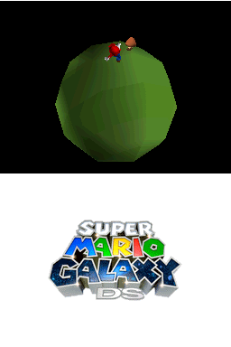 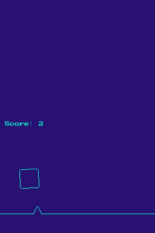 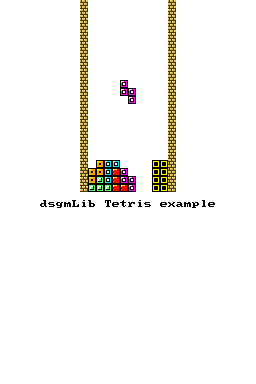 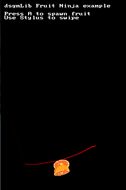 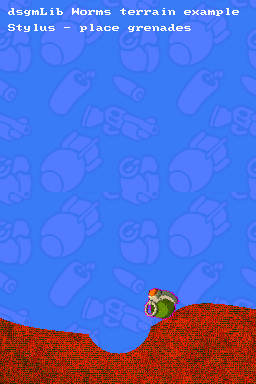 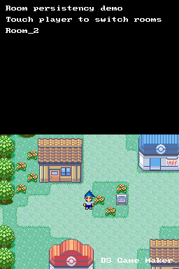
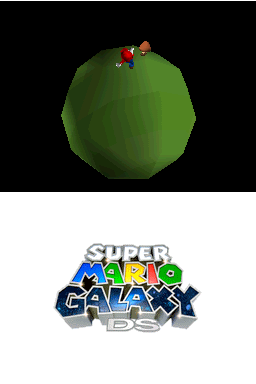 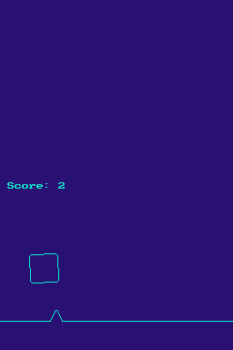 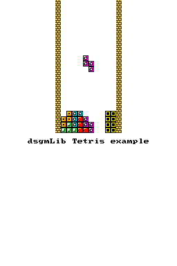 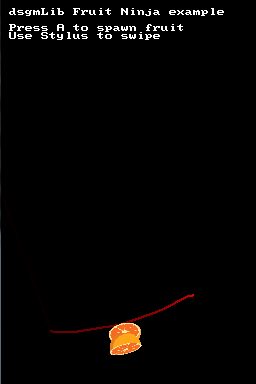 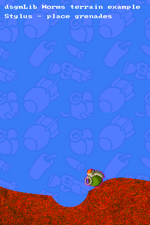 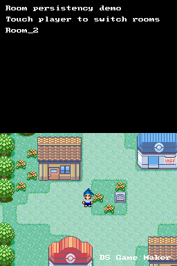 Games made by others
Feedback
I just want to say it's great what you guys have been doing! I downloaded the latest build of dsgmLib yesterday expecting un-finished coding with no examples/documentation that'd be super-complicated to figure out (Especially because it's in C which I don't have much experience in when compared to C#.), but I was wrong! You already have several great examples which explain pretty much everything about the library, and actually coding with it is a breeze!
...
It just makes DS home-brew creation so easy! No longer do you have to have to code sprite-drawing tasks by yourself, or put up with the many limitations of PALib. dsgmLib handles it all for you, and it does it well!
...
while I doubt I understand it well enough to actually code dsgmLib, I definitely understand it well enough to make some examples for the library. Currently I'm porting the 'Asteroids X' example from DSGM 5, and it's going much better than I would've expected thanks to your amazing library!